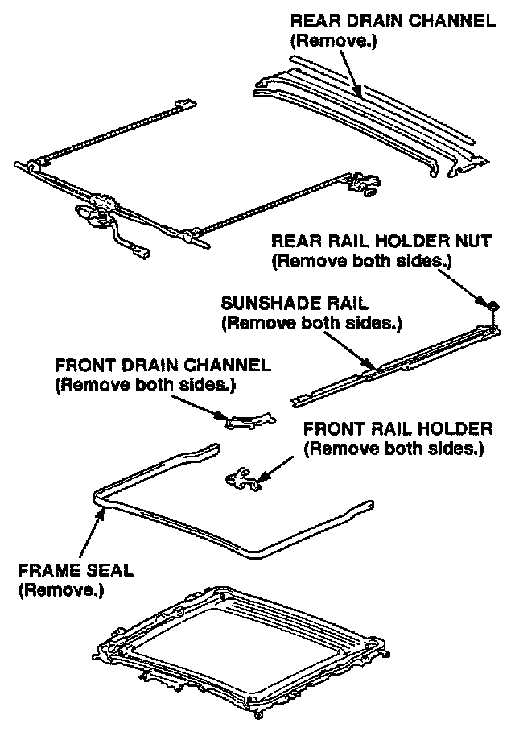
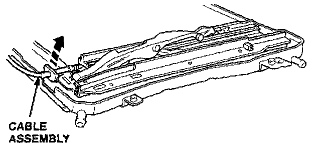
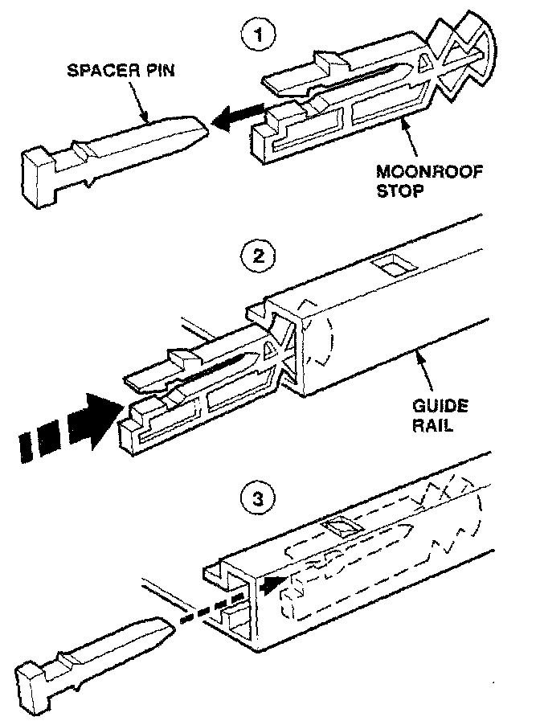
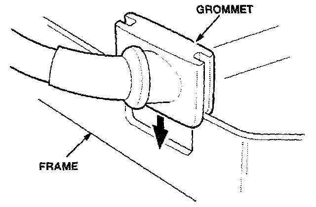

Moonroof Will Not Close
November 29, 1999BULLENTIN NO.
97-030
YEAR
1995-97
MODEL
Integra 4-door
VIN APPLICATION
See VEHICLES
AFFECTED
Moonroof Won't Close
(Supersedes 97-030, dated August 19, 1997)
SYMPTOM
The moonroof will not close when it is in the tilted-up position.
PROBABLE CAUSE
The front moonroof stops are broken.
VEHICLES AFFECTED
1995-96 Integra LS, LSS, GS-R: ALL
1997 Integra:
LS, GS - Thru VIN JH4DB7...VS006690
GS-R - Thru VIN JH4DB8...VS000939
CORRECTIVE ACTION
Replace the front moonroof stops.
PARTS INFORMATION
Front Moonroof Stop (two required):
P/N 70302-SR3-305
WARRANTY CLAIM INFORMATION
In warranty: The normal warranty applies.
Operation number: 814103
Flat rate time: 3.5 hours
Failed P/N: 70302-SR3-003
Defect code: 018
Contention code: B01
Template ID: 97-030A
Skill level: Repair Technician
Out of warranty: Any repair performed after warranty expiration may be eligible for goodwill consideration by the District Technical Manager or your Zone Office. You must request consideration, and get a decision, before starting work.
REPAIR PROCEDURE
1. Remove the headliner, the moonroof glass, and the moonroof frame assembly. Refer to section 20 of the appropriate service manual.
2. Lay a clean towel on a flat surface, and place the moonroof frame assembly on it.

3. Remove these components from the moonroof frame:
- Frame seal
- Rear drain channel
- Both front drain channels
- Both front rail holders
- Both sunshade rails Nuts from the rear rail holders

4. Lift one side of the cable assembly to release the grommet.
5. Lift the front of the guide rail, and remove the old stop. Remove any broken pieces that are left in the guide rail.

6. Remove the spacer pin from the new stop, and install the stop in the guide rail as shown. You can damage the new stop if you try installing it with the spacer pin attached.
7. Insert the spacer pin into the new stop. Make sure it "clicks" into place.
8. Repeat steps 4 thru 7 on the other side.

9. Reinsert the cable assembly grommets, making sure they fit snugly in the frame. If the grommets are not installed properly, water can leak into the passenger compartment.
10. Reinstall all the parts removed from the moonroof frame assembly.
11. Reinstall the moonroof frame assembly
12. Reinstall the moonroof glass, and check that it opens and closes properly.
13. Reinstall the headliner.